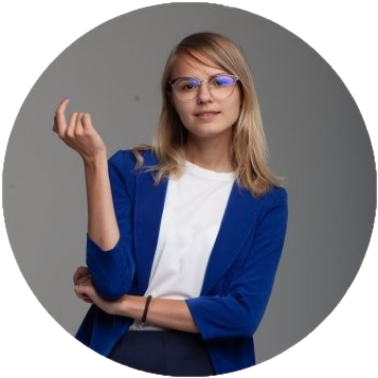
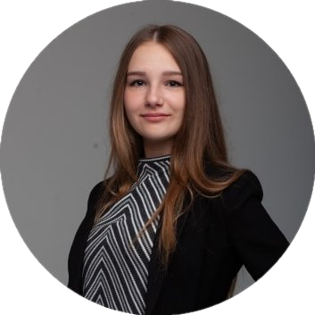

Башева Анна

Физика, Математика, Информатика
Студентка АлтГТУ факультета информационных технологий. Вожатый ООЦ Кристалл. Расскажет, как запомнить формулы, не заучивая их. Закончила школу с золотой медалью, активно принимала участие в олимпиадах по физике и математике и занимала в них призовые места. Успешно занимается подготовкой ребят к ОГЭ не первый год. |
|
|
Сметанина Полина
Физика
Выпускница Алтайского государственного технического университета, направление: “Информационная безопасность”. Участник и победитель школьных и студенческих всероссийских, краевых и региональных олимпиад по физике и информатике. Закончила школу с золотой медалью и университет с красным дипломом. Является участником и организатором многих студенческих и школьных мероприятий и олимпиад технического профиля. Имеет публикации в международных сборниках статей.
|
|
|
Сидельцев Артур
Информатика
Обучается на направлении “Прикладная информатика” в АлтГУ. Победитель конкурсов разработчиков “Хакатон”, финалист конкурса “Лучшие проекты информатизации на Алтае”. Сдал ЕГЭ по информатике на 100 баллов и готов сделать так, чтобы ученики повторили его результат.
|
|
|
Шадрина Настя

Математика
Студентка АлтгГТУ, направление "Информационная безопасность". Окончила школу с золотой медалью. Третий год помогает ребятам успешно подготовиться к экзаменам. В простой и дружелюбной обстановке научит решать самые "страшные" задания и поможет поверить в себя!
|
|
|
Бабушкина Елизавета
Русский язык
Студентка АлтГУ института истории и международных отношений, направление: “Зарубежное регионоведение”. Неоднократно принимала участие в уровневых олимпиадах школьников, призёр и победитель ряда лингвистических олимпиад, что обеспечило поступление как в барнаульские, так и столичные вузы вне конкурса. Самостоятельно подготовилась к сдаче ЕГЭ по русскому языку на 96 баллов, готова передать опыт успешной сдачи экзаменов ученикам.
|
|